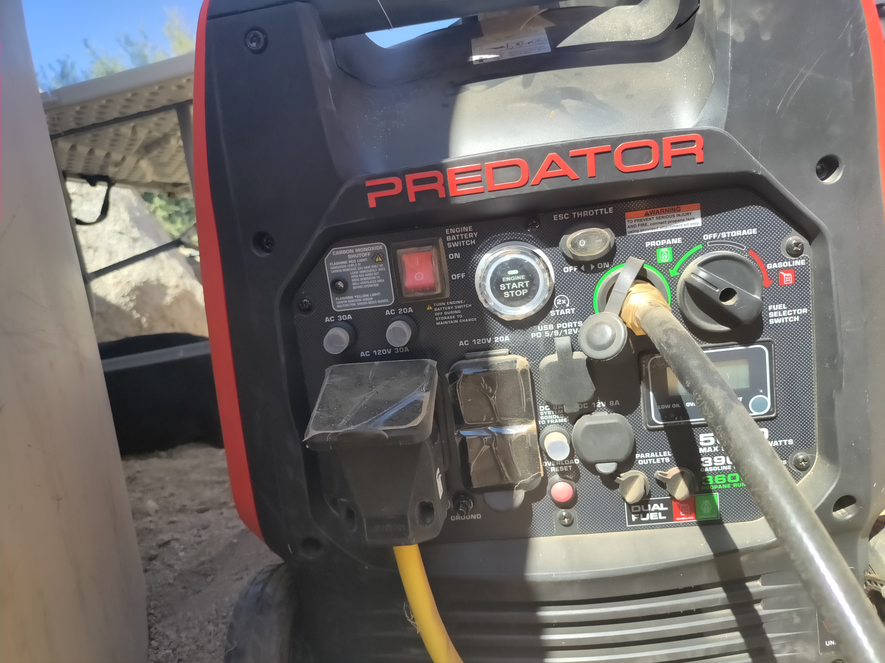
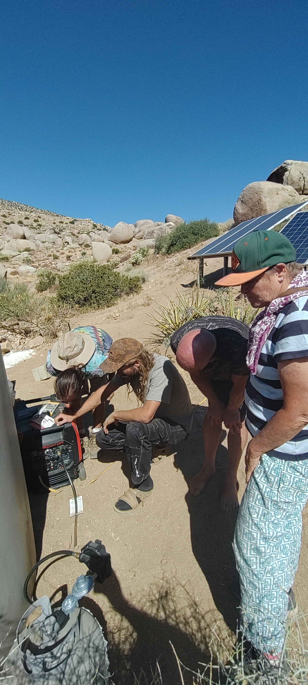
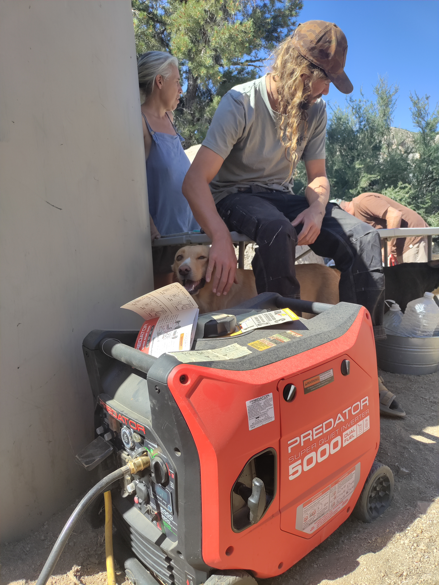

Field Report 002 · Energy
The Kitchen
Generator
Robert explaining the generator to every at Boulder Gardens. People had been messing with the controls, so we agreed to keep it simple: use only the large Start button. The generator is normally set to propane and requires no priming. When the batteries are low, we press the large center button and let the generator provide backup power. And, of course, it needs to be turned off before leaving the area.

We took a look at the generator that’s tied into the solar system in the kitchen. The batteries kept running low—either because the air conditioner was running a lot, someone used the electric kettle, or we had cloudy days, though we haven’t had many of those! In any case, there was often no power, and people didn’t know how to start the generator, so we brought it up at our weekly meeting.
The generator is a Predator 5000 dual-fuel inverter generator. On propane it can provide about 3,600 watts continuously and up to 5,000 watts briefly when starting equipment. It can also run on gasoline, where it provides about 3,900 running watts. A standard 20-pound propane tank can operate it for roughly 14 hours at a light load. It also has low-oil shutdown, overload protection, a carbon-monoxide shutoff, and a digital display.
The kitchen solar system has plenty of panel capacity—possibly more than the inverter’s built-in solar charge controller is designed to accept at one time. The solar array is rated at about 2,745 watts, while the Growatt’s solar-input rating is lower. That does not necessarily mean the panels are damaging the inverter; the controller can limit the power it accepts. However, both the total panel wattage and the voltage of the panel strings need to remain within the Growatt’s safe limits. This is something we are continuing to document and check.
The generator fills the gap when the batteries have been drawn down by heavy loads, especially the air conditioner and electric kettle, or when solar production is reduced. Most of the time the kitchen runs on sunlight and stored battery power. The generator is there when that is not enough.
Like all portable generators, it must remain outdoors, well away from occupied spaces, with the exhaust directed away from people, animals, doors, and windows.
Photographic Record
The work, seen in place
Selected photographs from the private FieldStation source record.



System Thread
Where this system connects
Public synopsis derived from Boulder Gardens Fieldstation Workbook source record FR002. Detailed equipment records, calculations, unresolved questions, and corrections remain in the workbook.